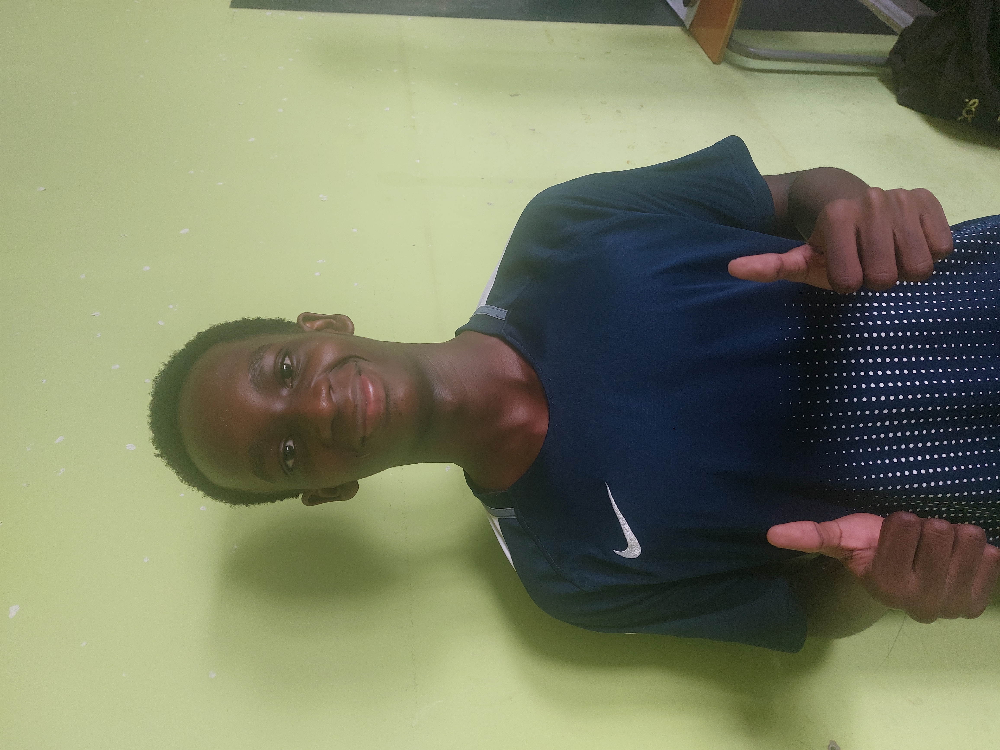

"Parler m’a aidé (Histoire de GWIZA MWIZA Nolan)."

"Pendant une période de ma vie, je ressentais beaucoup de stress, surtout à cause de l’école. Entre les devoirs, les examens et la pression de réussir, j’avais l’impression de ne jamais pouvoir me reposer. Même quand j’avais du temps libre, je pensais toujours à ce que je devais faire.
Petit à petit, j’ai commencé à me sentir fatigué, démotivé et parfois même anxieux sans vraiment comprendre pourquoi. Je n’en parlais à personne parce que je pensais que c’était normal ou que les autres vivaient la même chose.
Un jour, j’ai décidé d’en parler à un ami proche. Il m’a écouté sans me juger, et ça m’a fait beaucoup de bien. J’ai compris que garder tout pour soi rend les choses plus difficiles.
Ensuite, j’ai commencé à changer certaines habitudes : prendre des pauses, respirer calmement, et essayer de ne pas me mettre trop de pression. Ce n’était pas facile au début, mais petit à petit, je me suis senti mieux.
Aujourd’hui, je sais que le stress fait partie de la vie, mais qu’il ne faut pas le laisser prendre le dessus. Parler, demander de l’aide et prendre soin de soi sont des choses essentielles.
Si tu ressens la même chose, sache que tu n’es pas seul et qu’il existe des solutions."